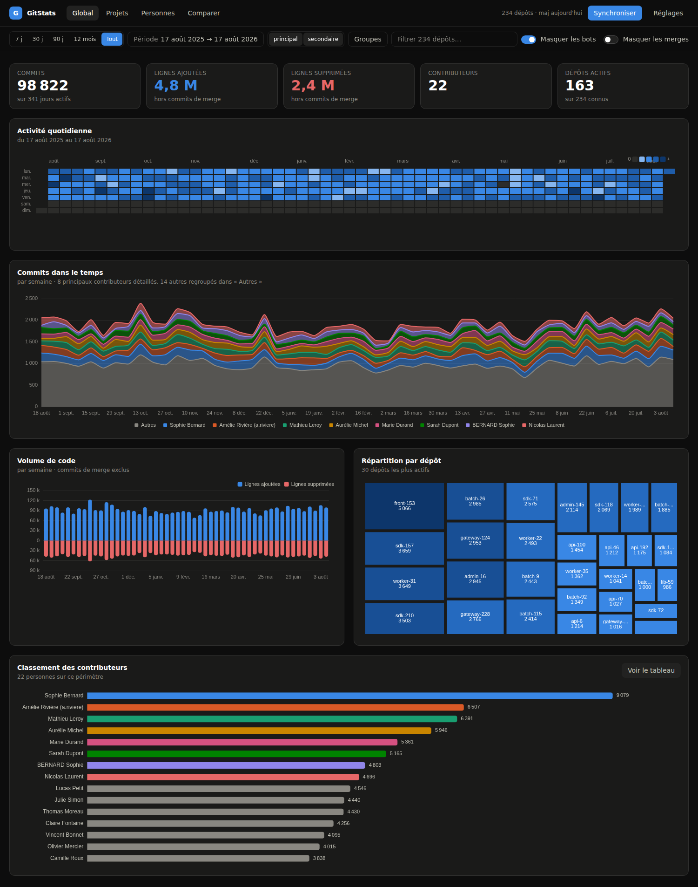
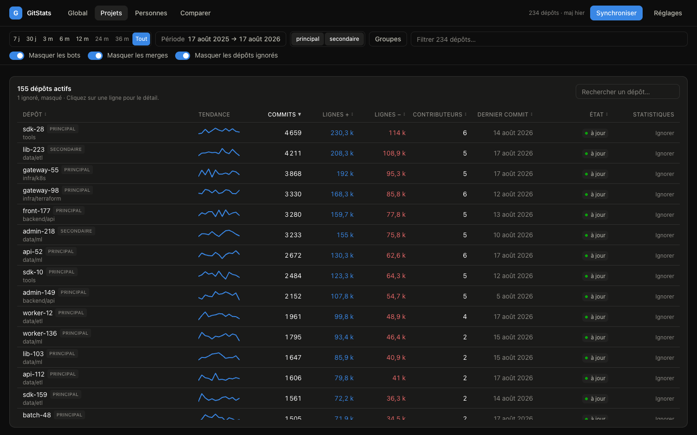
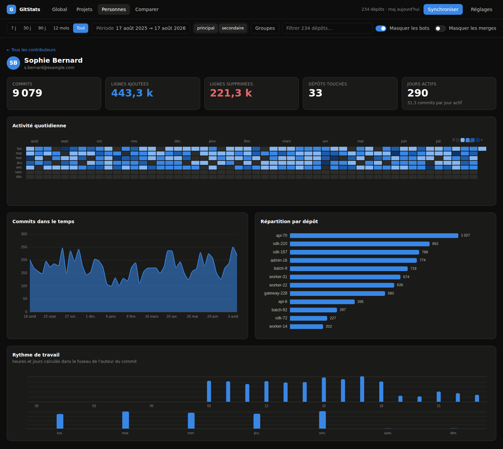
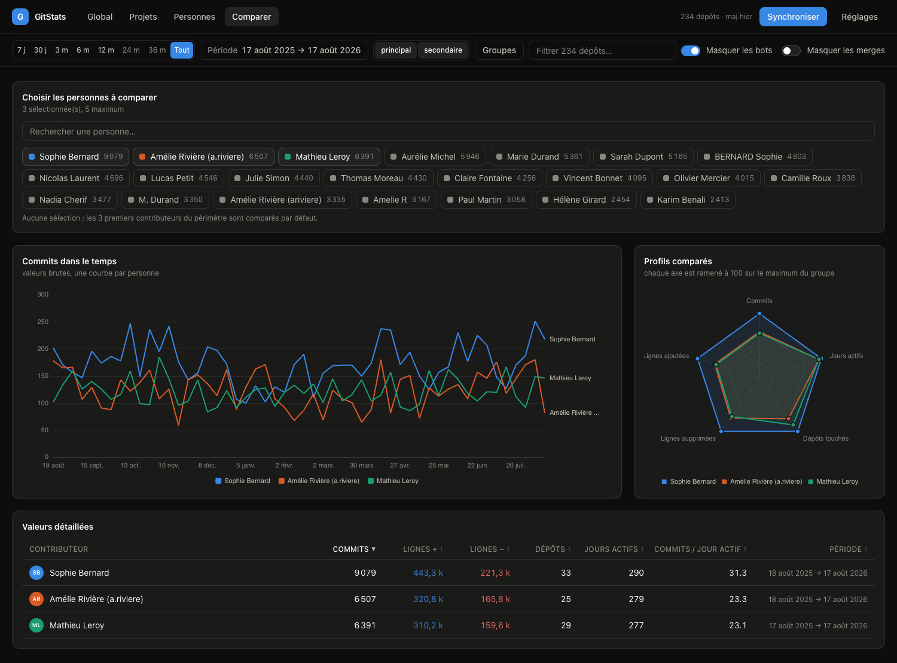

Toute l'activité de votre parc GitLab,
sans rien déployer.
GitStats est une page statique qui interroge elle-même l'API de vos instances GitLab, agrège tous vos dépôts — répartis sur autant de serveurs que nécessaire — et vous rend commits, lignes de code, contributeurs et rythmes de travail. Votre token ne quitte jamais l'onglet.

Capture prise sur le jeu de démonstration livré avec le projet ; chez vous, les chiffres sont les vôtres.
Le problème
GitLab sait montrer un dépôt.
Il ne sait pas répondre à « qu'est-ce qui s'est passé sur tous nos dépôts cette année ? » — encore moins quand ils vivent sur deux serveurs différents.
Un outil de plus à héberger
Un backend, une base, un compte de service. Donc une décision d'hébergement, une revue de sécurité, un budget d'exploitation — et un token qui vit quelque part ailleurs que chez vous.
Une page statique, point.
Votre navigateur appelle directement l'API de chaque instance avec votre Personal Access Token, agrège les résultats et les stocke en local. Rien à déployer, rien à administrer, rien à faire valider.
Ce que vous obtenez
Un tableau de bord qui tient la charge d'un parc entier
Pensé pour des centaines de dépôts et des dizaines de personnes, pas pour un projet isolé.
Vue globale instantanée
KPI, calendrier d'activité, commits par contributeur, volume de code ajouté et supprimé, répartition par dépôt — toute l'année sur un écran.
Multi-instances natif
Plusieurs GitLab dans les mêmes graphiques. Un limiteur de débit par serveur, un token expiré n'arrête que son instance, et sur une seule instance l'interface reste inchangée.
Sync incrémental
Un dépôt qui n'a pas bougé coûte zéro appel. Le premier passage prend quelques minutes ; les suivants, moins de trente secondes.
Identités rapprochées
Adresse pro, adresse perso, noreply, nom mal saisi. Fusion automatique sur e-mail identique, suggestions pour le reste — jamais sans votre validation.
Miroirs détectés, chiffres justes
Deux dépôts qui partagent un SHA sont forcément le même code. Le miroir est écarté d'un clic, sans quoi il gonflerait silencieusement tous les classements.
Vos données restent vôtres
IndexedDB pour la vitesse, plus un fichier .json que vous posez où vous voulez. Les tokens n'y sont jamais écrits.
Dépôts
Le parc entier, triable et filtrable
Commits, lignes ajoutées et supprimées, contributeurs, tendance, fraîcheur de la dernière collecte. Chaque ligne ouvre la fiche du dépôt.
- Pastille d'instance dès qu'il y en a plus d'une
- Recherche locale par nom ou slug
- Dépôt de config qui écrase tout ? Ignorez-le sans arrêter sa collecte

Personnes
Les humains, agrégés entre serveurs
Quelqu'un qui commite sur deux GitLab avec la même adresse compte pour une seule personne — l'identifiant d'auteur dérive de l'e-mail, pas de l'instance.
- Rythme de travail par heure et par jour de semaine
- Répartition par dépôt et jours réellement actifs
- Tout suit la barre de filtres, en direct

Comparer
De 2 à 5 personnes côte à côte
Une courbe de commits par personne, un radar normalisé sur le maximum du groupe, et le tableau des valeurs brutes en dessous — parce qu'un radar sert à voir une forme, pas à lire un chiffre.
- Courbes non empilées : comparer, ce n'est pas composer
- La couleur suit la personne, jamais son rang

Comment ça marche
La collecte, en trois vagues
Un classement utilisable avant même la fin de la collecte, pendant que l'historique daté continue de se remplir en arrière-plan.
Découverte
La liste des projets, avec leur last_activity_at — gratuit, et c'est lui qui tient tout le coût.
GET /projects?membership=true
~3 appels
Aperçu contributeurs
Un classement all-time immédiatement lisible, servant d'aperçu pendant que la vague suivante travaille.
GET /projects/:id/…/contributors
1 appel / dépôt
Historique daté
Les commits avec leurs statistiques de lignes, agrégés en seaux (dépôt, auteur, jour) dès l'ingestion.
GET /…/commits?since=…&with_stats=true
N appels / dépôt
Le coût, en vrai
1er sync — quelques minutes : le coût suit votre nombre de dépôts et la profondeur d'historique demandée.
Syncs suivants — un ordre de grandeur en moins : seuls les dépôts qui ont bougé coûtent des appels.
Élargir la fenêtre de 12 à 24 mois ne re-télécharge que la période manquante.
Un débit qui se règle tout seul
Les en-têtes RateLimit-* ne sont pas exposés en cross-origin : impossible de piloter dessus.
Le limiteur se calibre donc sur le seul signal observable, le 429 —
token bucket + AIMD, backoff exponentiel avec full jitter, pause et annulation réelles.
Confidentialité
Le chemin le plus court entre vous et votre GitLab
Il n'y a pas d'intermédiaire, parce qu'il n'y a rien entre les deux. Héberger l'application ne change rien : le serveur ne livre que des fichiers, il ne voit ni les tokens ni les données.
- Les tokens vivent en
sessionStorage— ou enlocalStoragesur choix explicite. - Les commits bruts ne sont jamais archivés : seuls les seaux journaliers restent.
- Le fichier
.jsonne contient aucun secret : il se partage sans risque. - Un token
read_apisuffit. Lecture seule, révocable en un clic.
Honnêteté
Ce que ça mesure — et ce que ça ne mesure pas
Ces chiffres décrivent une activité, pas une productivité et encore moins une performance individuelle. Un refactoring qui supprime 3 000 lignes est généralement une bonne journée de travail.
Dans le périmètre
- oui Commits, sur la branche principale par défaut
- oui Lignes ajoutées et supprimées
- oui Contributeurs, jours actifs, rythme horaire
- oui Plusieurs instances GitLab agrégées
Volontairement dehors
- non Merge requests, issues, pipelines CI
- non Les lignes des commits de merge — les compter doublerait tout dépôt qui merge
- non Toute fusion d'identités automatique au-delà de l'e-mail exact
- non Un classement de « performance »
Deux minutes, zéro installation
Regardez d'abord. Branchez ensuite.
La démo tourne sur un jeu de données généré — plusieurs instances, des centaines de dépôts,
un dépôt mirroré, des identités en double — sans solliciter le moindre GitLab.
Quand vous voulez vos vrais chiffres : un token read_api, une URL, et c'est parti.
Aucun compte à créer·Aucune carte bancaire·Aucun serveur à demander à l'IT